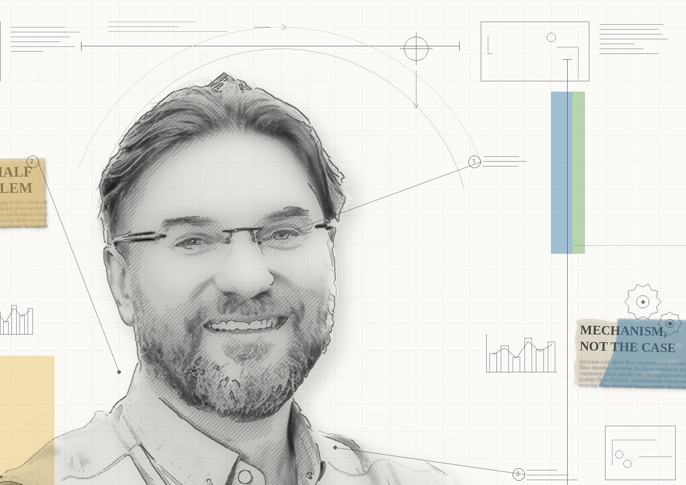

O mnie
Blisko trzydzieści lat pracuję w produkcji ciągłej: procesy, media, energia, gospodarka wodna, systemy sterowania. Dziś kieruję procesami technologicznymi i energetycznymi browaru w Żywcu, w Grupie Żywiec.
Wystarczająco długo, żeby zobaczyć ten sam wzór wiele razy. Rozwiązanie jest policzone, uzgodnione, zatwierdzone, i nie wchodzi. Albo wchodzi i nie daje tego, co miało dać. Przyczyna prawie nigdy nie leży po stronie techniki. Leży w tym, jak zbudowany jest system pomiaru, gdzie naprawdę stoi ograniczenie i co się opłaca ludziom, którzy mają to uruchomić.
To jest ta druga połowa problemu. Pierwszą umie policzyć każdy inżynier.
Teksty powstają na styku dwóch rzeczy: książek, które czytam po kolei i opisuję razem z tym, z czym się nie zgadzam, oraz mechanizmów, które widziałem w ruchu. Piszę o mechanizmie, nie o przypadku: bez nazw firm, zakładów, dostawców i ludzi, bez liczb bezwzględnych. Jeśli tekst nie kończy się jedną rzeczą do zrobienia w poniedziałek rano, nie jest skończony.
Publikuję po polsku i po angielsku. To nie są tłumaczenia. Wersja angielska odpowiada na inne pytanie.
Kontakt
Najprościej mailem: kontakt@jaroslawhoc.pl. Na Substacku można komentować pod każdym tekstem.